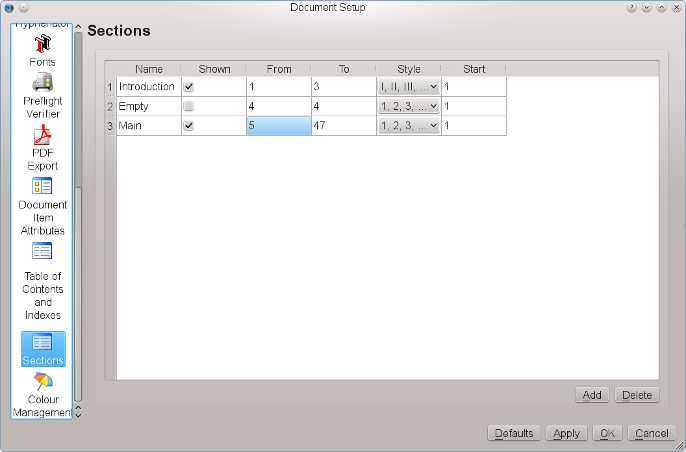

Adding automatically incrementing page numbers is not as easy as, for example, in a word processor, but, once mastered, it’s quite simple and reliable. Moreover, when it comes to mixed numbering schemes, like I, II, III for the preface, 1, 2, 3 for the main text and A, B, C for appendices, it’s actually much easier to use than a word processor.
As you already know, almost everything in Scribus has to happen in a frame, and page numbers are no different. Thus, to insert a page number, we need to create a text frame first. Once we have entered the editing mode of the frame, we can insert a variable for the page number, which will tell Scribus to insert the actual page number. There are two different ways to insert this variable, the first one being the keyboard shortcut Ctrl+Alt+Shift+P. If you’re afraid to break your fingers, you can assign a new shortcut in the Preferences dialog or use the menu command Insert > Character > Page Number. You can now see that Scribus shows the number of the current page, but this approach may not be what you want to achieve, as it will only add the page number to the currently selected page. If you want to automate the page numbering (also called “pagination”), you should insert the variable into a text frame on a Master Page. As you will note, Scribus doesn’t display a real number on a Master Page, because a Master Page isn’t a real document page and thus doesn’t have a position in the sequence of pages. Instead, Scribus displays # as a placeholder symbol.
To change the numbering scheme, you have to use File > Document Setup. Under Sections you can now create numbering sections for your document:
|  |
Let’s assume you have an introduction that covers the first three pages, and you want it to be numbered with Roman numbers. The main text will start at the physical page 5 with page number 1. For aesthetical reasons, page 4 shouldn’t have a number at all. The first section is already there. You can enter a name for it in the “Name” column. In the “From” column enter “1” and in “To” enter “3”. Choose “I, II, III” as a numbering style and set the “Start” value to “1”.
To add a new section, click on the “Add” button at the bottom of the dialog. For page 4 in our example the values would be: “From” = 4, “To” = 4, “Style” and “Start” don’t matter here, but it’s important that you uncheck “Shown” in the second column, because this means there will be no visible page number on page 4. For the main text, the values are: “From” = 5, “To” = [the number of pages you need for the main text], “Style” = 1, 2, 3, and “Start” = 1. That’s all, your document will be paginated as desired.